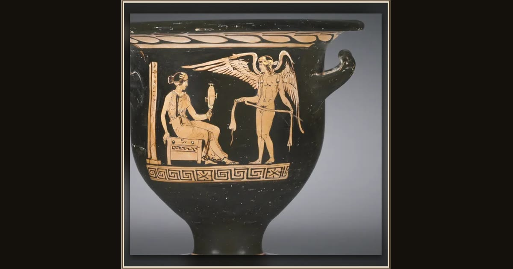

Red-Figure Bell Krater (Mixing Vessel): Aphrodite and Eros
Graz Painter (South Italian, Apulian, active c. 380–360 BCE) · c. 370–360 BCE · cma
Winged Eros offers a sash to seated Aphrodite, who holds a mirror. The chorus addresses Love as a power that brings desire through the eyes (525–529). Explore its place in Euripides's Plays, Hippolytus, line 529.